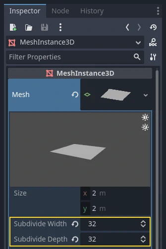
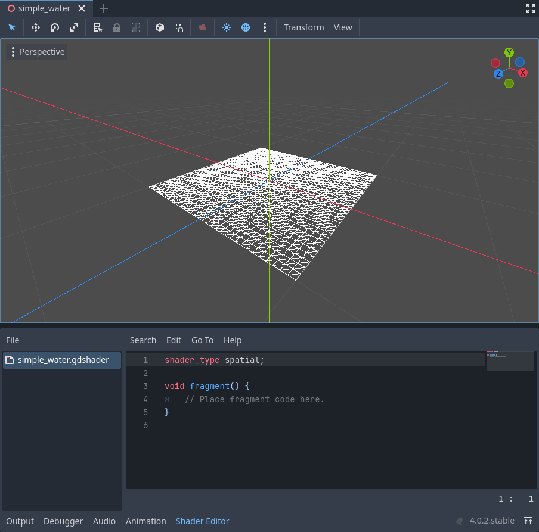
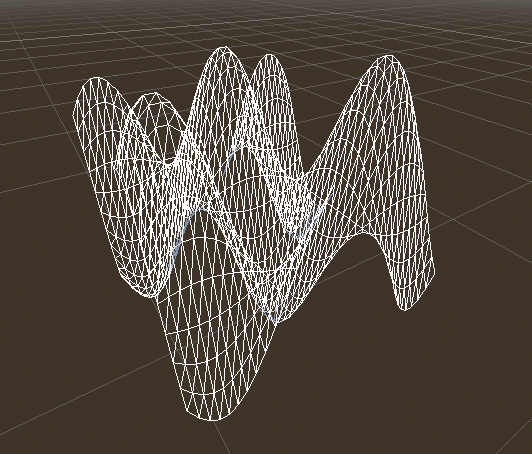
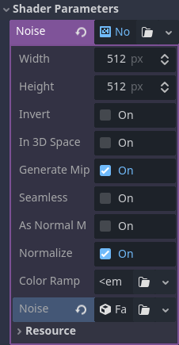
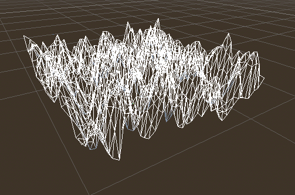
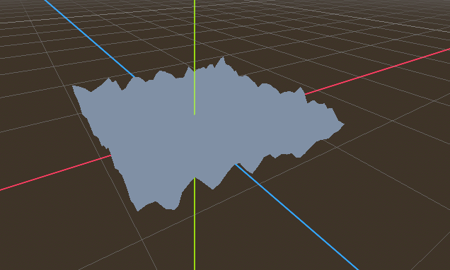

Your first 3D shader
You have decided to start writing your own custom Spatial shader. Maybe you saw a cool trick online that was done with shaders, or you have found that the StandardMaterial3D isn't quite meeting your needs. Either way, you have decided to write your own and now you need to figure out where to start.
This tutorial will explain how to write a Spatial shader and will cover more topics than the CanvasItem tutorial.
Spatial shaders have more built-in functionality than CanvasItem shaders. The expectation with spatial shaders is that Godot has already provided the functionality for common use cases and all the user needs to do in the shader is set the proper parameters. This is especially true for a PBR (physically based rendering) workflow.
This is a two-part tutorial. In this first part we will create terrain using vertex displacement from a heightmap in the vertex function. In the second part we will take the concepts from this tutorial and set up custom materials in a fragment shader by writing an ocean water shader.
Note
This tutorial assumes some basic shader knowledge such as types
(vec2, float, sampler2D), and functions. If you are
uncomfortable with these concepts it is best to get a gentle
introduction from The Book of Shaders before completing this tutorial.
Where to assign my material
In 3D, objects are drawn using Meshes. Meshes are a resource type that store geometry (the shape of your object) and materials (the color and how the object reacts to light) in units called "surfaces". A Mesh can have multiple surfaces, or just one. Typically, you would import a mesh from another program (e.g. Blender). But Godot also has a few PrimitiveMeshes that allow you to add basic geometry to a scene without importing Meshes.
There are multiple node types that you can use to draw a mesh. The main one is MeshInstance3D, but you can also use GPUParticles3D, MultiMeshes (with a MultiMeshInstance3D), or others.
Typically, a material is associated with a given surface in a mesh, but some nodes, like MeshInstance3D, allow you to override the material for a specific surface, or for all surfaces.
If you set a material on the surface or mesh itself, then all MeshInstance3Ds that share that mesh will share that material. However, if you want to reuse the same mesh across multiple mesh instances, but have different materials for each instance then you should set the material on the MeshInstance3D.
For this tutorial we will set our material on the mesh itself rather than taking advantage of the MeshInstance3D's ability to override materials.
Setting up
Add a new MeshInstance3D node to your scene.
In the inspector tab, set the MeshInstance3D's Mesh property to a new
PlaneMesh resource, by clicking on <empty> and
choosing New PlaneMesh. Then expand the resource by clicking on the image of
a plane that appears.
This adds a plane to our scene.
Then, in the viewport, click in the upper left corner on the Perspective button. In the menu that appears, select Display Wireframe.
This will allow you to see the triangles making up the plane.

Now set Subdivide Width and Subdivide Depth of the PlaneMesh to 32.

You can see that there are now many more triangles in the MeshInstance3D. This will give us more vertices to work with and thus allow us to add more detail.

PrimitiveMeshes, like PlaneMesh, only have one surface, so instead of an array of materials there is only one. Set the Material to a new ShaderMaterial, then expand the material by clicking on the sphere that appears.
Note
Materials that inherit from the Material resource, such as StandardMaterial3D and ParticleProcessMaterial, can be converted to a ShaderMaterial and their existing properties will be converted to an accompanying text shader. To do so, right-click on the material in the FileSystem dock and choose Convert to ShaderMaterial. You can also do so by right-clicking on any property holding a reference to the material in the inspector.
Now set the material's Shader to a new Shader by clicking <empty> and
select New Shader.... Leave the default settings, give your shader a name,
and click Create.
Click on the shader in the inspector, and the shader editor should now pop up. You are ready to begin writing your first Spatial shader!
Shader magic

The new shader is already generated with a shader_type variable, the
vertex() function, and the fragment() function. The first thing Godot
shaders need is a declaration of what type of shader they are. In this case the
shader_type is set to spatial because this is a spatial shader.
shader_type spatial;
The vertex() function determines where the vertices of your MeshInstance3D
appear in the final scene. We will be using it to offset the height of each vertex
and make our flat plane appear like a little terrain.
With nothing in the vertex() function, Godot will use its default vertex
shader. We can start to make changes by adding a single line:
void vertex() {
VERTEX.y += cos(VERTEX.x) * sin(VERTEX.z);
}
Adding this line, you should get an image like the one below.

Okay, let's unpack this. The y value of the VERTEX is being increased.
And we are passing the x and z components of the VERTEX as arguments
to cos() and sin(); that gives
us a wave-like appearance across the x and z axes.
What we want to achieve is the look of little hills; after all. cos() and
sin() already look kind of like hills. We do so by scaling the inputs to the
cos() and sin() functions.
void vertex() {
VERTEX.y += cos(VERTEX.x * 4.0) * sin(VERTEX.z * 4.0);
}

This looks better, but it is still too spiky and repetitive, let's make it a little more interesting.
Noise heightmap
Noise is a very popular tool for faking the look of terrain. Think of it as similar to the cosine function where you have repeating hills except, with noise, each hill has a different height.
Godot provides the NoiseTexture2D resource for generating a noise texture that can be accessed from a shader.
To access a texture in a shader add the following code near the top of your
shader, outside the vertex() function.
uniform sampler2D noise;
This will allow you to send a noise texture to the shader. Now look in the inspector under your material. You should see a section called Shader Parameters. If you open it up, you'll see a parameter called "Noise".
Set this Noise parameter to a new NoiseTexture2D. Then in your NoiseTexture2D, set its Noise property to a new FastNoiseLite. The FastNoiseLite class is used by the NoiseTexture2D to generate a heightmap.
Once you set it up and should look like this.

Now, access the noise texture using the texture() function:
void vertex() {
float height = texture(noise, VERTEX.xz / 2.0 + 0.5).x;
VERTEX.y += height;
}
texture() takes a texture as the first argument and
a vec2 for the position on the texture as the second argument. We use the
x and z channels of VERTEX to determine where on the texture to look
up.
Since the PlaneMesh coordinates are within the [-1.0, 1.0] range (for a size
of 2.0), while the texture coordinates are within [0.0, 1.0], to remap
the coordinates we divide by the size of the PlaneMesh by 2.0 and add
0.5 .
texture() returns a vec4 of the r, g, b, a channels at the position.
Since the noise texture is grayscale, all of the values are the same, so we can
use any one of the channels as the height. In this case we'll use the r, or
x channel.
Note
xyzw is the same as rgba in GLSL, so instead of texture().x
above, we could use texture().r. See the OpenGL documentation for more
details.
Using this code you can see the texture creates random looking hills.

Right now it is too spiky, we want to soften the hills a bit. To do that, we will use a uniform. You already used a uniform above to pass in the noise texture, now let's learn how they work.
Uniforms
Uniform variables allow you to pass data
from the game into the shader. They are
very useful for controlling shader effects. Uniforms can be almost any datatype
that can be used in the shader. To use a uniform, you declare it in your
Shader using the keyword uniform.
Let's make a uniform that changes the height of the terrain.
uniform float height_scale = 0.5;
Godot lets you initialize a uniform with a value; here, height_scale is set
to 0.5. You can set uniforms from GDScript by calling the function
set_shader_parameter()
on the material corresponding to the shader. The value passed from GDScript
takes precedence over the value used to initialize it in the shader.
# called from the MeshInstance3D
mesh.material.set_shader_parameter("height_scale", 0.5)
Note
Changing uniforms in Spatial-based nodes is different from
CanvasItem-based nodes. Here, we set the material inside the PlaneMesh
resource. In other mesh resources you may need to first access the
material by calling surface_get_material(). While in the
MeshInstance3D you would access the material using
get_surface_material() or material_override.
Remember that the string passed into set_shader_parameter() must match the name
of the uniform variable in the shader. You can use the
uniform variable anywhere inside your shader. Here, we will
use it to set the height value instead of arbitrarily multiplying by 0.5.
VERTEX.y += height * height_scale;
Now it looks much better.

Using uniforms, we can even change the value every frame to animate the height of the terrain. Combined with Tweens, this can be especially useful for animations.
Interacting with light
First, turn wireframe off. To do so, open the Perspective menu in the upper-left of the viewport again, and select Display Normal. Additionally in the 3D scene toolbar, turn off preview sunlight.

Note how the mesh color goes flat. This is because the lighting on it is flat. Let's add a light!
First, we will add an OmniLight3D to the scene, and drag it up so it is above the terrain.

You can see the light affecting the terrain, but it looks odd. The problem is the light is affecting the terrain as if it were a flat plane. This is because the light shader uses the normals from the Mesh to calculate light.
The normals are stored in the Mesh, but we are changing the shape of the Mesh in the shader, so the normals are no longer correct. To fix this, we can recalculate the normals in the shader or use a normal texture that corresponds to our noise. Godot makes both easy for us.
You can calculate the new normal manually in the vertex function and then just
set NORMAL. With NORMAL set, Godot will do all the difficult lighting
calculations for us. We will cover this method in the next part of this
tutorial, for now we will read normals from a texture.
Instead we will rely on the NoiseTexture again to calculate normals for us. We do that by passing in a second noise texture.
uniform sampler2D normalmap;
Set this second uniform texture to another NoiseTexture2D with another FastNoiseLite. But this time, check As Normal Map.

When we have normals that correspond to a specific vertex we set NORMAL, but
if you have a normalmap that comes from a texture, set the normal using
NORMAL_MAP in the fragment() function. This way Godot will handle
wrapping the texture around the mesh automatically.
Lastly, in order to ensure that we are reading from the same places on the noise
texture and the normalmap texture, we are going to pass the VERTEX.xz
position from the vertex() function to the fragment() function. We do
that using a varying.
Above the vertex() define a varying vec2 called tex_position. And
inside the vertex() function assign VERTEX.xz to tex_position.
varying vec2 tex_position;
void vertex() {
tex_position = VERTEX.xz / 2.0 + 0.5;
float height = texture(noise, tex_position).x;
VERTEX.y += height * height_scale;
}
And now we can access tex_position from the fragment() function.
void fragment() {
NORMAL_MAP = texture(normalmap, tex_position).xyz;
}
With the normals in place the light now reacts to the height of the mesh dynamically.

We can even drag the light around and the lighting will update automatically.

Full code
Here is the full code for this tutorial. You can see it is not very long as Godot handles most of the difficult stuff for you.
shader_type spatial;
uniform float height_scale = 0.5;
uniform sampler2D noise;
uniform sampler2D normalmap;
varying vec2 tex_position;
void vertex() {
tex_position = VERTEX.xz / 2.0 + 0.5;
float height = texture(noise, tex_position).x;
VERTEX.y += height * height_scale;
}
void fragment() {
NORMAL_MAP = texture(normalmap, tex_position).xyz;
}
That is everything for this part. Hopefully, you now understand the basics of vertex shaders in Godot. In the next part of this tutorial we will write a fragment function to accompany this vertex function and we will cover a more advanced technique to turn this terrain into an ocean of moving waves.